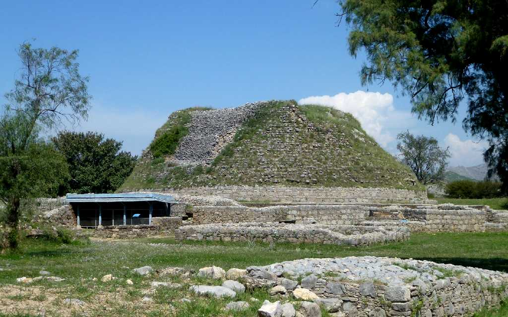
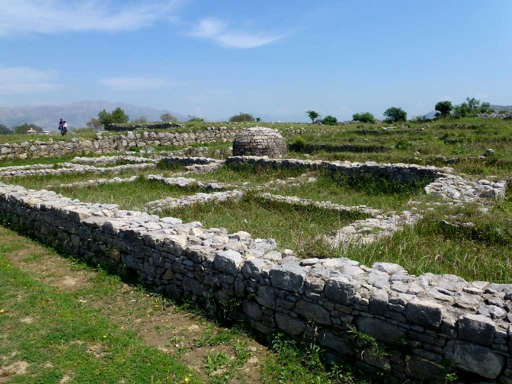
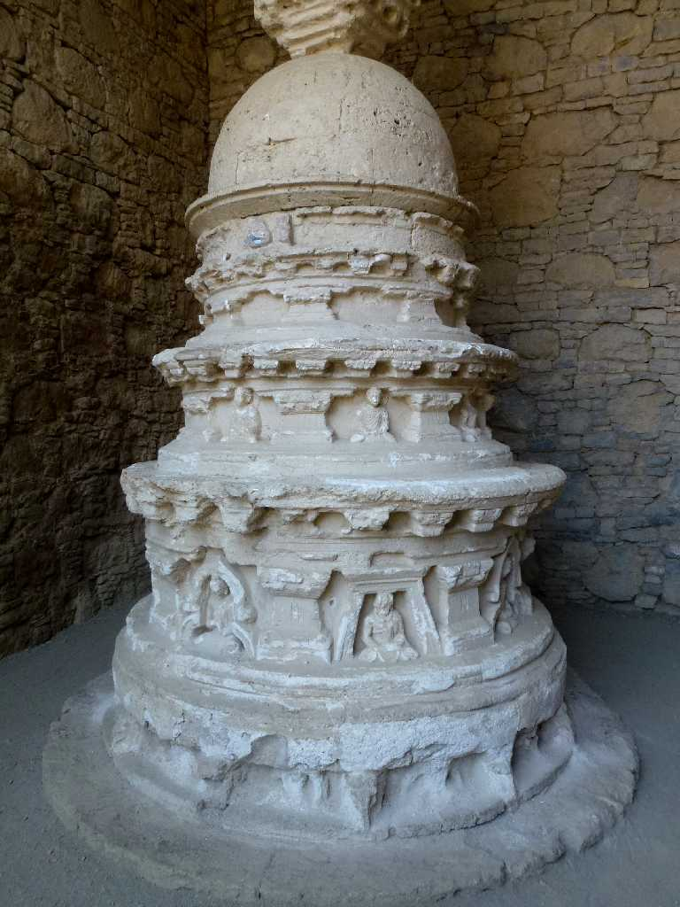
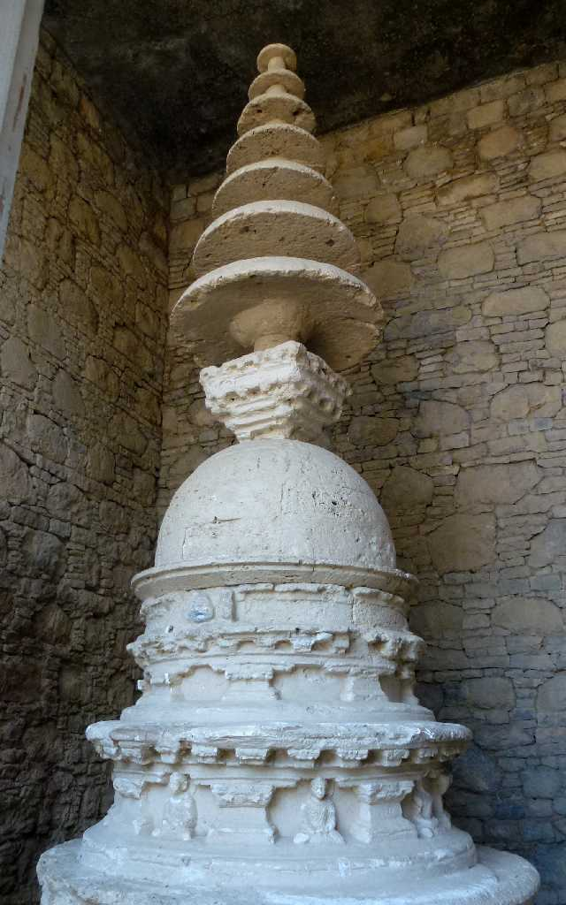
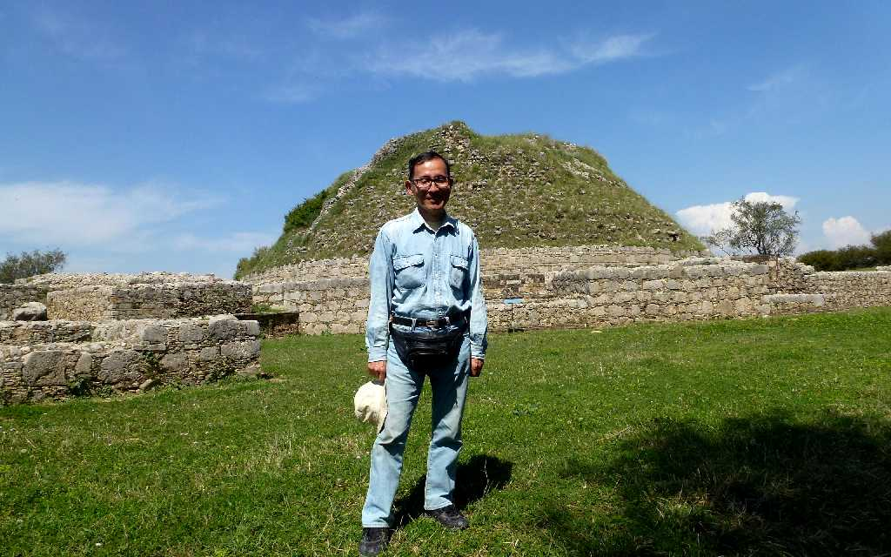

Stupa Dharmarajika Taxila
紀元前３世紀にアショーカ王が仏舎利を８つのストゥーパに分納した一つと云われるタキシラで最も古く大きい仏教寺院ダルマラージカ

Dharmarajika Taxila
紀元前６世紀から５世紀まで千年間に渡り栄えたヒンドゥー教と仏教の宗教センター都市タキシラ
 
Stupa Mohra Moradu Taxila
奉献ストゥーパが遺る仏教寺院モーラモラドゥ
Jaulian Taxila
ガンダーラの仏教寺院ジュウリアン

March 30 2013 Taxila